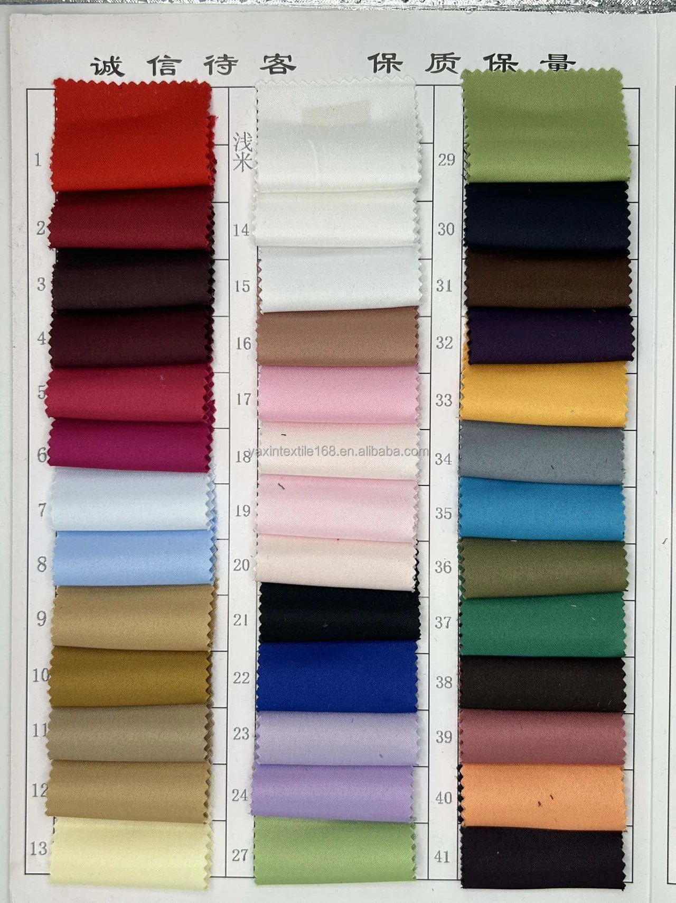
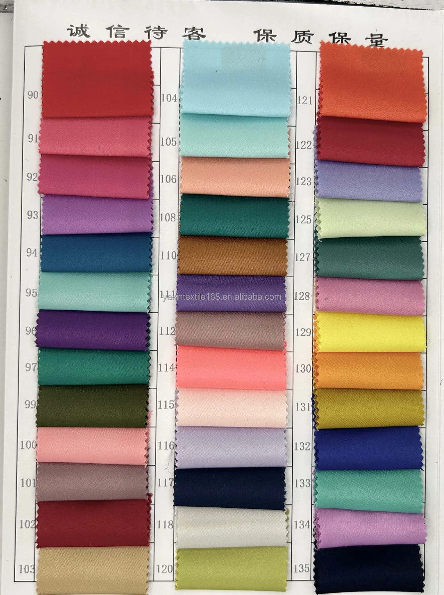
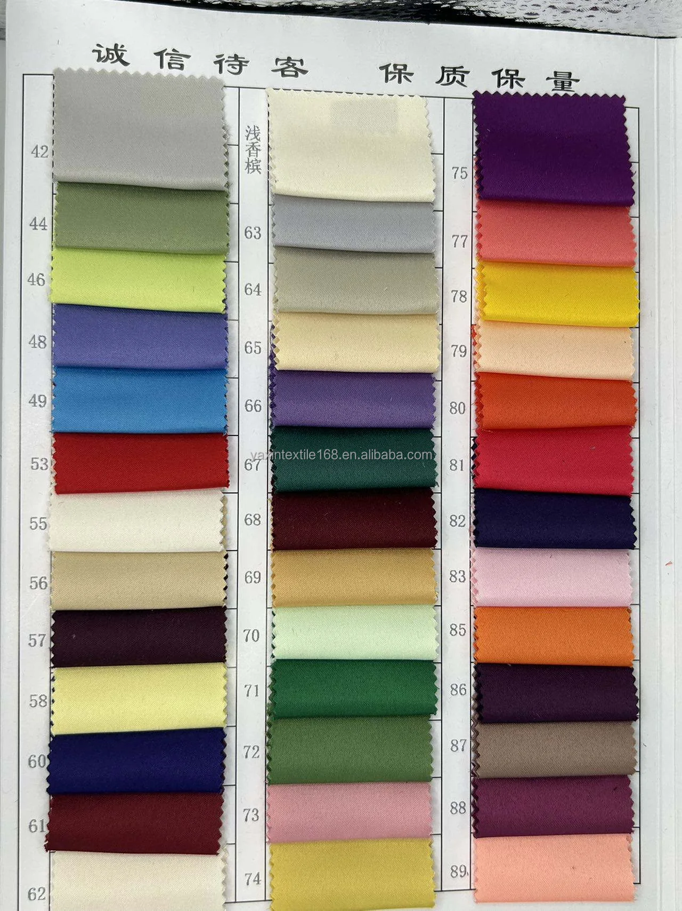
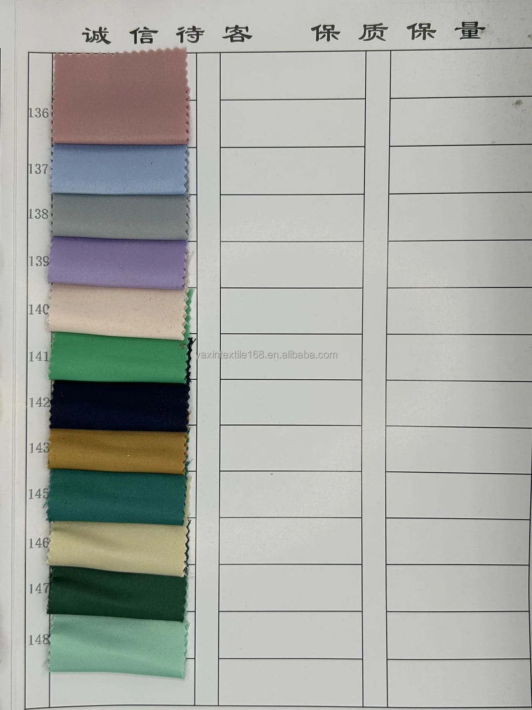

White woven matte satin fabric for bridal gowns, formal dresses and occasionwear.
| Fabric Type | Woven matte satin fabric |
|---|---|
| Color | White |
| Composition | 100% Polyester |
| Fabric Weight | 160gsm |
| Width | 150cm / approximately 59 inches |
| Yarn Specification | 50*300D |
| Order Quantity | Reference Unit Price | Currency |
|---|---|---|
| 500–4,999 yards | USD 1.75 / yard | USD |
| 5,000+ yards | USD 1.35 / yard | USD |
Final quotation depends on approved color, quantity, packing and shipping terms.



